Основні числові характеристики випадкових величин
1. Середнє очікуване значення випадкової
величини із врахуванням закону розподілу ймовірностей називають
математичним сподіванням випадкової величини.
Математичним сподіванням дискретної
випадкової величини
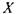
називають число, яке дорівнює сумі добутків
усіх можливих значень х та відповідні їм ймовірності.
Математичне
сподівання випадкової величини
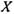
позначають
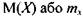
Для дискретної
випадкової величини
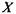
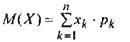
(6)
Для неперервної
випадкової величини

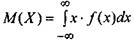
(7)
Математичне сподівання випадкової
величини має наступні
властивості:
1)
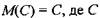
- постійна величина;
2)
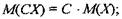
3) Якщо
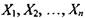
незалежні величини, то
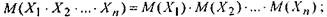
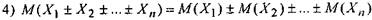
2. Дисперсією випадкової величини
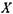
називають число, яке
дорівнює математичному сподіванню квадрата відхилення випадкової величини від її математичного сподівання.
Якщо
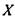
-
дискретна випадкова величина, то її дисперсія, яка
позначається
 , або
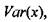
може
мати вигляд:
, або
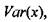
може
мати вигляд:
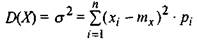
(8)
 (9)
(9)
Якщо
 -
неперервна величина, то її дисперсія
-
неперервна величина, то її дисперсія
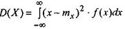
(10)
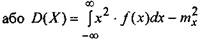
(11)
Дисперсія випадкової величини має
такі основні властивості:
1)
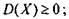
2)
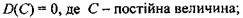
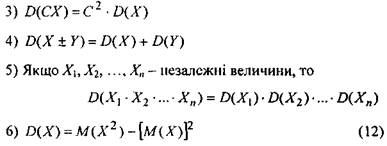
Згідно формул
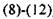
, величина дисперсії
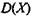
буде
вимірюватись у квадратних
одиницях.
Наприклад,
якщо випадкова велична вимірюється в грамах, то дисперсія
цієї величини відповідно - в квадратних грамах.
Щоб уникнути цього у практичній
діяльності, використовують середнє квадратичне
відхилення, яке дорівнює квадратному кореню з дисперсії.
Середнє квадратичне відхилення випадкової величини
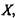
позначають
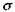
або
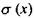
і визначають як
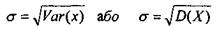
(13)
Приклад 1. Знайти математичне сподівання, дисперсію та
середнє квадратичне відхилення випадкової величини
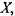
що
задана законом розподілу.
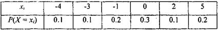
Розв'язання.
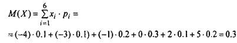
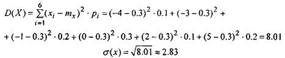
Приклад 2. Знайти математичне сподівання, дисперсію і середнє квадратичне
відхилення випадкової величини
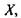
яка задана інтегральною функцією розподілу
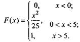
Розв'язання. Знаходимо диференційну функцію розподілу
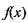

Використовуючи формули (7), (11) та (13), знаходимо, що
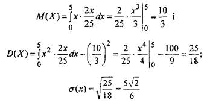